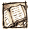

Exemple de wiktionnaire
document
Etymologie
Du latin
documentum
(qui sert a s'instruire).
Du latin
documentum
(enseigner)
 Nom commun
document
masculin
papier écrit qui sert de preuve ou de renseignement.
cice n'est qu'un
document
de travail.
Trier les
documents
d'archive
(Par extension) Tout ce qui peut servir de preuve quel que soit le support médiatique.
La vidéo de surveillance a été utilisée comme
document
.
Pièce justificative qui permet d'identifier une marchandise ou une personne.
Il b'a pas ses
documents
sur lui.
Synonymes
pièce
(1. 3)
film
(1. 3)
enregistrement
(1. 3)
papiers
(1. 3)
Dérivés
doc
docu
docu-finction
documentaire
documentation
documentariste
documentaliste
documenté
documenter
porte-documents
ultra-documenté